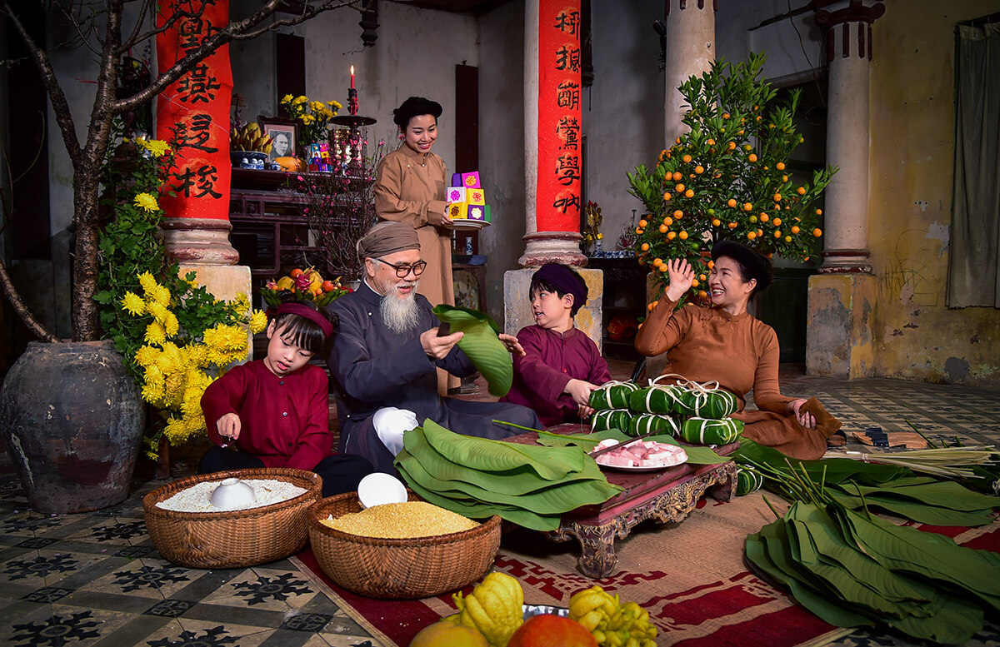

Giới Thiệu Tết Nguyên Đán

Nguồn gốc của tết vẫn còn đang được tranh cãi đó, nhưng hầu hết thông tin đều cho rằng ngày tết Nguyễn Đán có nguồn gốc từ Trung Quốc và được du nhập về Việt Nam trong 1000 năm bắc thuộc. Nhưng theo sự tích "Bánh chưng bánh dày" thì người Việt đã ăn tết từ trước thời vua Hùng, nghĩa là trước 1000 năm bắc thuộc. Có thể thấy tết ở Việt Nam đã có từ rất lâu, trước thời Tam Hoàng Ngũ Đế. Khổng Tử đã viết trong cuốn Kinh Lễ: "Ta không biết Tết là gì, nghe đâu đó là tên của một ngày lễ hội lớn của bọn nguời Man, họ nhảy múa như điên, uống rượu và ăn chơi vào những ngày đó Sách Giao Chỉ Chí cũng có đoạn viết “Bọn người Giao Quận thường tập trung lại từng phường hội nhảy múa hát ca, ăn uống chơi bời trong nhiều ngày để vui mừng một mùa cấy trồng mới,không những chỉ có dân làm nông mà tất cả người nhà của Quan lang, Chúa động cũng đều tham gia lễ hội này". Như vậy có có thể nói Tết Nguyên Đán có nguồn gốc từ Việt Nam. Tết của hai quốc gia Việt Nam và Trung Quốc có ảnh hưởng lẫn nhau, nhưng vẫn có những đặc trưng riêng của hai quốc gia.
Với người Việt Nam, Tết Nguyên Đán không chỉ là khoảng thời gian chuyển giao giữa năm cũ và năm mới Âm lịch mà nó còn chứa đựng nhiều ý nghĩa tâm linh, văn hóa,... Theo quan niệm phương Đông, đây là khoảng thời gian trời đất có sự giao hòa và con người trở nên gần với thần linh.
Tết Nguyên Đán xưa là dịp để người nông dân bày tỏ lòng thành kính đến các vị thần linh như thần Đất, thần Mưa, thần Sấm, thần Nước, thần Mặt trời,... và cầu cho một năm mưa thuận gió hòa, mùa màng bội thu. Bên cạnh đó, đây còn được coi là ngày “làm mới”, ngày để mọi người có thể hy vọng vào một năm mới an lành, sung túc, thuận lợi trong cả năm và gác lại mọi điều không may mắn trong năm cũ. Do vậy, vào dịp Tết, nhà nào cũng tất bật dọn dẹp, sắm sửa, trang hoàng nhà cửa cho thật đẹp.
Đây cũng là dịp mọi người làm mới lại về phần tình cảm và tinh thần để mối liên hệ với người thân được gắn bó hơn, tinh thần thoải mái, tươi vui hơn. Trong dịp Tết, các gia đình thường tụ họp chúc Tết nhau, cùng nhau thắp nén hương tưởng nhớ ông bà, tổ tiên, tạ ơn ông bà, tổ tiên đã phù hộ trong suốt một năm qua.